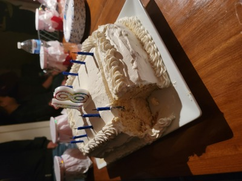
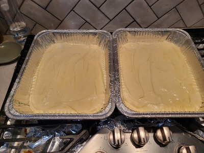
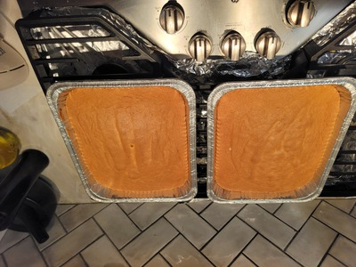
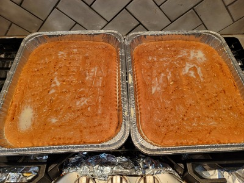
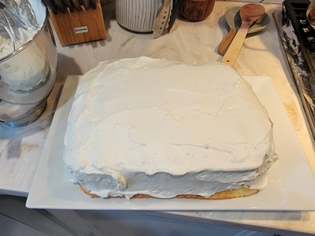
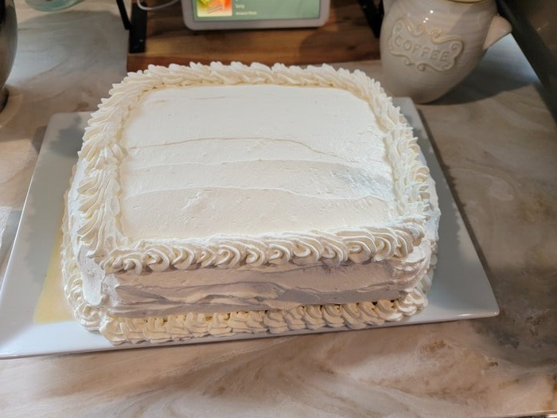

Tres Leches Cake
This delicious cake is a classic Mexican dessert that is incredibly moist and sweet. It is a very spongey that is allowed to soak up a sweet milk mixture overnight. It is great for parties and can even keep well for several days if stored in the refrigerator.
1. Preheat over to 350 degrees fahrenheit. Gather a 9 by 13 baking pan, mixing bowls, and a mixer.
2. Gather below ingedients on your counter to prepare to begin.
Ingredients
2¼ cups flour
2¼ teaspoons baking powder
½ teaspoon salt
3 large eggs
1¼ cups sugar
1½ teaspoons vanilla extract
¾ cup melted butter
¾ cup Greek-style yogurt
Milk Mixture
1 cup whole milk
1 14 oz. can sweetened condensed milk
1 12oz. can evaporated milk
Topping
2 cups heavy cream
½ cup powdered sugar
1 teaspoon vanilla extract
3. Mix together flour, baking powder, and salt.
4. In a separate bowl, mix together the eggs, sugar, and whisk until combined. Then add the vanilla extract, butter, and yogurt, and whisk until combined.
5. Gradually mix in the dry ingredients.
6. Pour the batter into the pan, and spread out evenly. Bake for 25 - 30 minutes.
7. Combine all the milk ingredients. When cake is done and cooled, poke holes in cake with a fork and pour the milk mixture evenly over cake. Cover and refrigerate overnight.
8. Whip topping ingredients together until it is still. The cake can be removed from pan carefully and topped with this mixture. Decorate further if desired.
10. Last but not least, enjoy!
    In the photos is a double-layered tres leches cake using this recipe doubled!